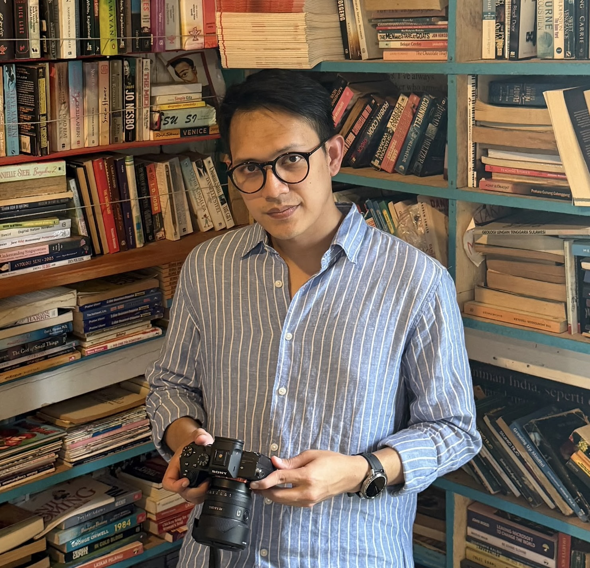
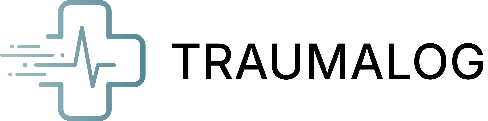
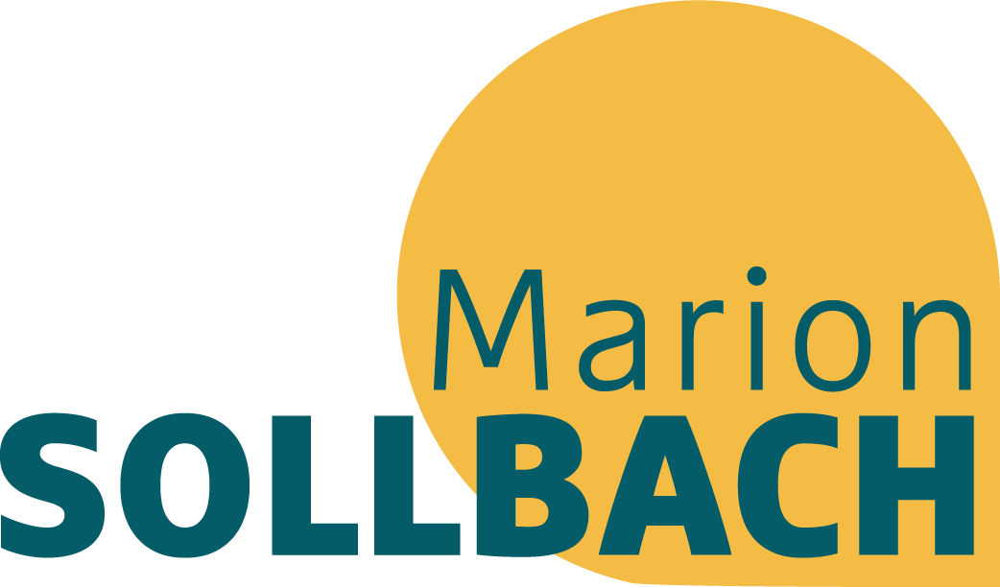
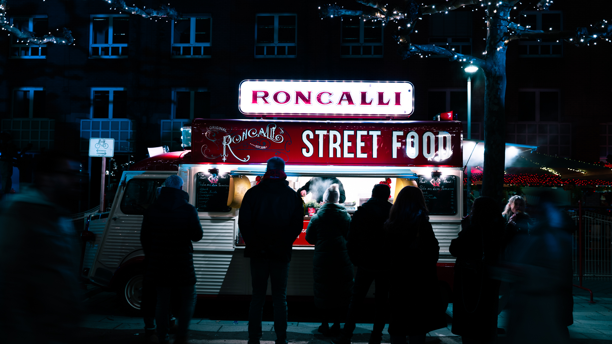
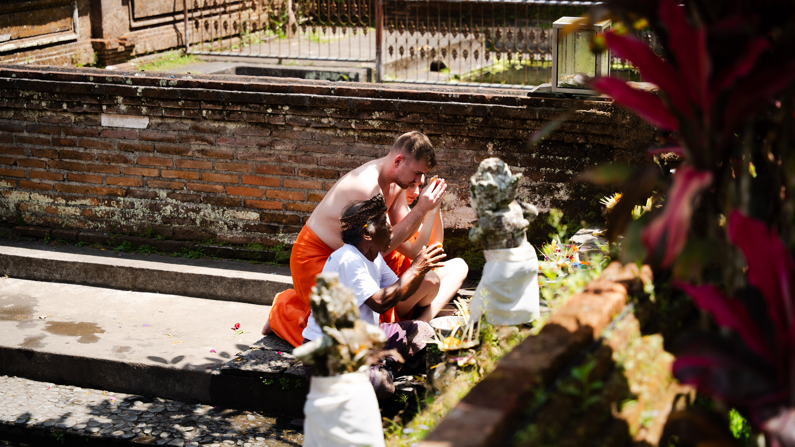
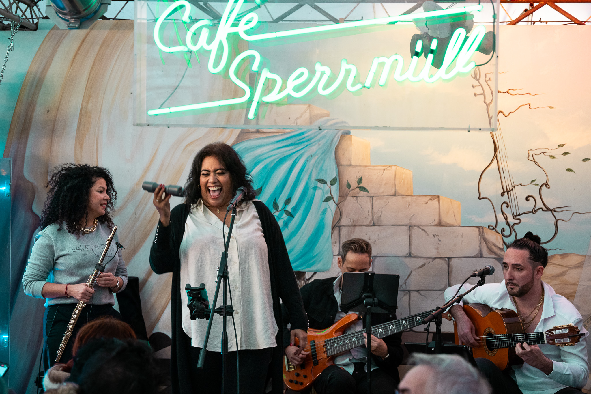
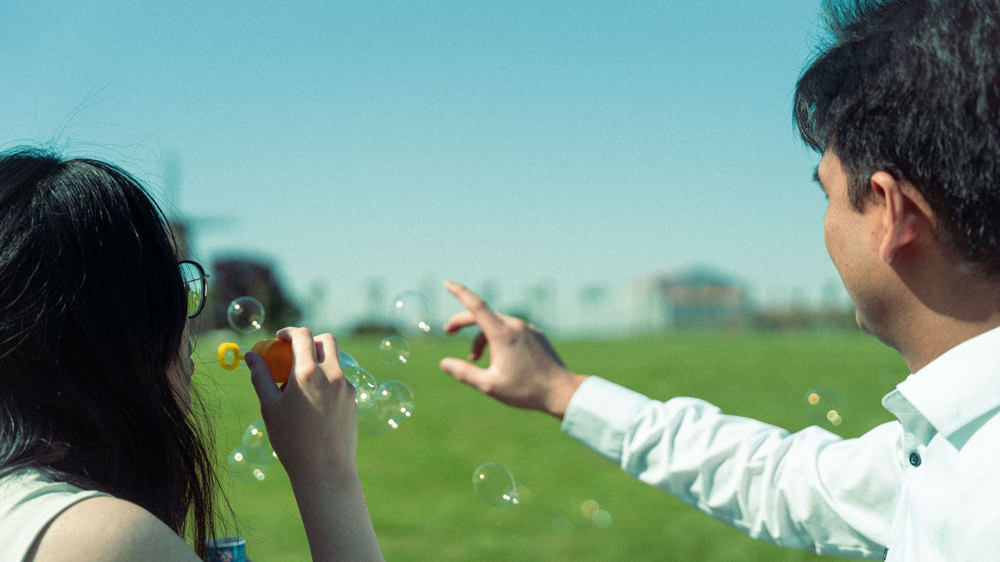

Looking to get in touch?
Feel free to contact me to talk about any opportunities or discuss about anything!

ariansyah.fauzanyafi@gmail.com

Location
Düsseldorf


Frontend Developer & UI/UX Designer
Master’s student in Media Informatics bridging design systems and frontend web development.

Hello there! I’m Fauzan.
I am a frontend developer and UX/UI designer with an academic background in media technology and media informatics. During my bachelor’s studies, I built a solid foundation in audiovisual media, which sparked my lasting passion for UX, photography and videography. This creative background shapes how I approach web development: I view digital interfaces through the lens of visual storytelling, composition, and detail. Today, I specialize in bridging design and code, transforming wireframes and design systems into clean, responsive, and accessible web experiences using modern HTML, CSS, and JavaScript. I am currently seeking new opportunities in software and web development where I can contribute my hybrid design-and-code mindset to building thoughtful digital products.
DOWNLOAD CVMaster's Degree | 2025 - present
Hochschule Düsseldorf
Master Medieninformatik M.Sc
Bachelor's Degree | 2018 - 2025
Hochschule Düsseldorf
Bachelor Medientechnik B.Eng
Focus: Audio-Visual Media, Interactive Systems, Media Software Engineering
Abitur | 2017-2018
Studienkolleg Hamburg
T-Kurs
Pre-college Course for International Students
Professional Experience
THE NEW ATLANTIC | Oct 2022 – Aug 2023
UI/UX Designer & Video Editor — Intern & Working Student
AMBU AMBU (Remote) | Aug 2021 – Feb 2022
Art Director & Video Editor
Additional Experience
UNIQLO | 2025 - 2026
Part-time Shop Assistant
MARCHÉ MÖVENPICK | Jun 2025 – Sep 2025
Part-time Warehouse & Operations Assistant
YOMARO Frozen Yoghurt | Mar 2024 – Aug 2024
Operations & Customer Service Assistant
LYONDELLBASELL — Wesseling | Aug 2019 – Oct 2019
Gas Testing Assistant
H&M – Hamburg | Aug 2019 – Oct 2019
Part-time Warehouse Assistant
UI/UX
Frontend & Web
Workflow & Tools

This project was developed in collaboration with Städtisches Klinikum Solingen to transform the critical emergency registration process from a manual, paper-based form into a real-time digital ecosystem. The application utilizes a unique QR code for each patient, making it effortless for paramedics to scan and instantly access or update vital patient records on the go.

The project involved designing a website for sustainability expert Ms. Marion Sollbach, with the goal of presenting her professional background, showcasing her previous work, and clearly communicating the services she offers. The website also serves as a platform for publishing her writings on sustainability. This project was part of my projects during my internship.
This multimedia storytelling project was developed as my Bachelor's thesis, exploring the history, present, and future aspirations of my family. It features four documentaries—each focusing on a family member—and highlights some beloved Indonesian dishes cherished by my family. The documentaries are transformed into an interactive multimedia format, allowing viewers to navigate and experience the story in their own way.
RASA is a multidisciplinary project where poetry and music come together to reflect on Indonesia’s current political landscape. The event featured performances centered on poetry, complemented by elements of singing and theatrical expression.
A curated look at my visual work and exploration in photography. Beyond interfaces and code, this space captures how I observe light, composition, and detail in everyday moments.




Feel free to contact me to talk about any opportunities or discuss about anything!
ariansyah.fauzanyafi@gmail.com
Location
Düsseldorf